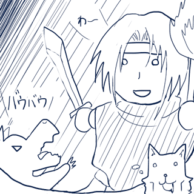

■2011-07-27 (水) クリフ2話＆第三回ウディコン▼
現在、モバイル用作品「クリフ深淵録の２話（第一章）」を開発中です。

第一章では、いよいよ「クリフ迷宮録」の本編に突入＋新展開！
ベズ殺しの罪を着せられたクリフは、神王に命じられて、
名も無き島の迷宮で『願いを叶える秘宝』を探すことになります。
果たして島に『願いを叶える秘宝』はあるのか？
以前に来たという兵士たちはどうなったのか？
クリフの妹の顔が一度も出てないけど果たしてどんな顔なのか、
またシェパード捜査録のときみたいな謎の生物じゃないのか！？
戦闘シーンの演出が犬とたわむれてるように見えるけど大丈夫か！？
セシュのお色気シーンがDoCoMoアプリの表現規制に
引っかかったりしないのか！？（※そんなシーンはありません）
などなど、気になる展開が満載です。乞うご期待！
なお、遊べるのは、今のところDoCoMo専用です。
【第三回ウディコン】
すでに毎年恒例となった「WOLF RPGエディターコンテスト（ウディコン）」を
今年も開催します。去年は驚くほどの数の作品が来ましたが、
今回は、３月にウディフェス(ｱｰｶｲﾌﾞ)があったことや、
告知を控えめにしていたこともあって（※するヒマがなかった）、
ほどほどの規模になるのではないかなと考えています。
これでまだ投稿数が増えるようなら、審査方法も少し改めなければなりません。
【ウディコン公式サイト】
http://www.silversecond.com/WolfRPGEditor/Contest/
投稿開始は８月７日からです。規約などをご確認の上、ご応募ください。
【ウディコン用イラスト】
また、今年のウディコン用イラストを
イラストBBS(閉鎖済)で密かに募集しています。
皆さんお忙しいと思いますので、そんなに集まらないとは思いますけれど、
もしご興味があるかたは、ぜひ描いていただけると嬉しいです。
最初の告知バナー作成日は、７月３１日頃を考えています。
（その日が修羅場だった場合は前後する可能性があります）
【拍手コメント返信】
＞auの携帯でもスケベなスケイルに会いたいです。
＞現在は予定はないんでしょうか？ .
「そのうち他のキャリアにも移植するよー」とはきいてますが
エンジニアさんのパワーを回してもらえるかどうかは、
やっぱり儲かりそうかどうかという点にかかってくるわけで、
DoCoMoの契約数によっても時期は変わってきそうな予感がします。
（※詳しいことは聞いてないので、私の勝手な予想です）
＞グーグルドキュメントが大層便利で感動したので、
＞うちの職場でも最近導入してみましたー！（略） .
こちらこそ喜んでいただけて幸いです。
グーグルドキュメントは、お手軽に書き込めるしまとめて見やすいしで、
情報をすり合わせたりするときに非常に便利ですよ！
意見をポンポン出してマスごと整理したりできるので、簡単な会議にも
便利ですし、私の場合は、ブレーンストーミング（案出し）や
バグ報告、ネタ帳として、とてもお世話になってます。
2011-07-27 (水)  カテゴリ: 開発日誌
カテゴリ: 開発日誌
 カテゴリ: 開発日誌
カテゴリ: 開発日誌